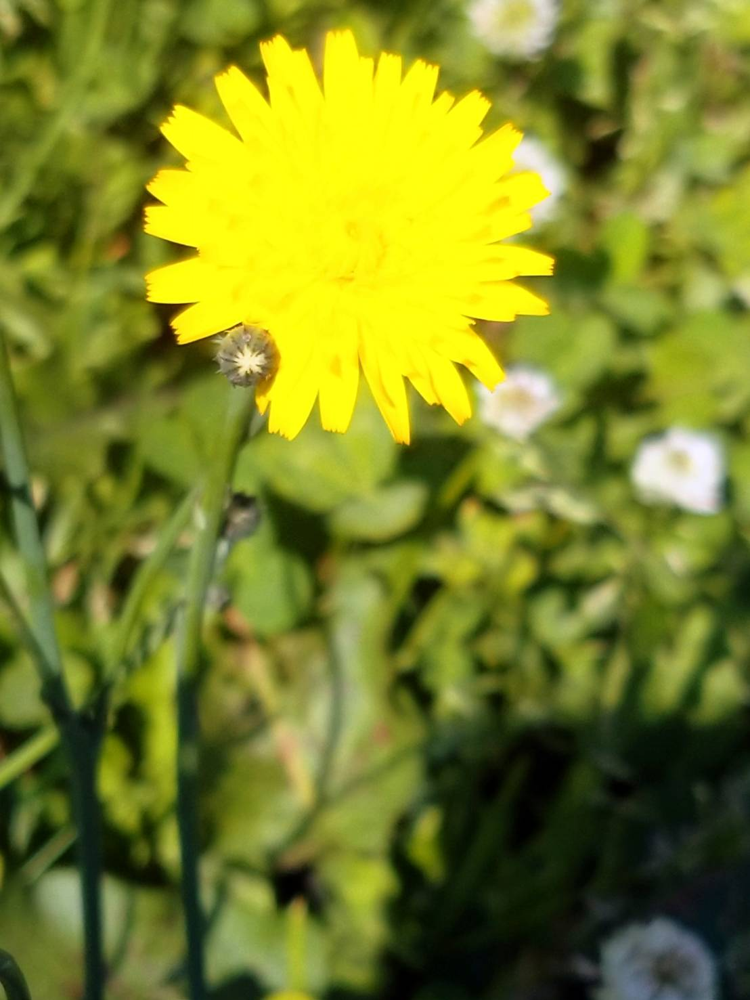

魔女修行編
手帳：日記を書いたり、占い、哲学するのに必要
他,自分が好きなモノ
：本、コーヒー(もはや朝食代わり)、アロマ、かわいいタオル、タロットカード、パソコン、お菓子
例
生活編
暖簾(のれん)
:エアコンが付いてないから、ドアを開けることもある。部屋の中が見えないようにするために必要。トトロを用意した。
コロコロ
:部屋に髪の毛が落ちる。カーペット用のコロコロで見つけ次第除去。雑念は占いの邪魔。
スリッパ
:暖かいふわふわタイプと、熱がこもらない涼しいタイプ用意。
網かご
:お風呂場に持っていけるかご。底が穴が開いているものが良い
電気ケトル
:コーヒーや紅茶を飲むから絶対必要
桶
:足を温めるのに使う。冷え性の人
机の上の装飾
:プログラムが上手く書けなくてカラスに馬鹿にされ、荒む心を癒す効果がある。
例
- あったらいいもの
- 暖簾のトトロ
- 籠、電気ケトル、桶、紅茶
- 装飾
学習・自問自答
| subject |
コメント |
| 科学技術リテラシ |
地味に面倒くさい日本語の練習。研究するならいずれ必要になるのは分かるけど、嘗めてかかると普通に落胆する・・・？すでにピンチ。 |
| 情報機器概論 |
課題は少ないので、なめてかかっても大丈夫。内容を完全に理解すること自体初心者には難しく、故に面白い内容も多い |
| 英語 |
曲者。課題は多いし、多分未来大生が「私はこんなことをするためにこの大学に来たんじゃないもん！！！！」と悲鳴を上げる代表的な死角教科。しかし、英語ができないとプログラミング言語のリファレンス読めないから英語ができない時点でプログラマとしては死活問題なのではないかと戦々恐々としている |
| 数学 |
授業中に内容を理解できるように集中すれば、英語に比べればずっと短時間で済む、ぶっちゃけ平均点でいいならそんなに勉強する必要もない、受験よりはずっとまし、マシ |
生活
アルバイトしたほうがいいかな‥と悩みつつも、手が出せずにいる状況。
朝起きてツイッターを見て、コーヒーや紅茶を食事代わりに一日中パソコンの前で正座をし、たまに散歩をしてはミミズを土に戻す救出活動をする毎日を送っている。
いつかミミズの神から恩返しが来ると思う(確信)、その時はお菓子で太った体を美人に変えてもらう予定だ
はこだては一年に二回タンポポが咲く。そして6月なのに気温が15度をきる驚異的な寒さで足が痛くて眠れない。アロマとお湯を用意して足を温めよう。下宿が５月いっぱいで給油をやめてて悲しくなった。
- いつも落ちているミミズ
- ４月のたんぽぽ
- ６月のたんぽぽ


西洋占星術オタク。魔女として自立するためにプログラミングでも学んでおけばいいんじゃないかと未来大に来たものの、課題に追いかけまわされたり、持ち前の根暗スキルが発動して真夜中に暗黒のツイートをぶちまけたり、色々やらかしている。対人問題にとっても悩まされる(頑固なので)星並びを持つ。
自他ともに認める面倒くさい性格だが、本人は大変人生を満喫している。魔女見習いとしてこれからも占いの研究に人生をささげる予定(予定は未定だけど)。
西洋占星術研究仲間、大募集中だけど大体占いするような人間というものは根暗だし、そう占星術の大研究家もおっしゃられているので期待はしない。
知人に紹介され、占いサークルに入っている。
繊細な人間なので、私が変なことを言ってもガン無視してくれるタイプの、あんまり他人に興味がなさそうな人間は好き。
でも無視されるのは嫌い。（あまのじゃく）あと、魔女狩りと孤立は嫌あああ
射手座。逃げ癖あり。資本主義とは違う意味で真の自由主義者。
アスクレピウス（蛇遣い座の医者神）。他人にも自分にも激甘。
天王星強め。(ヘリオ水星天王星スクエア)。変人です。
エニアグラムはタイプ9(7ハウス月牡牛土星合。) 対人ストレス耐性がありません。めっちゃ臆病です。
>